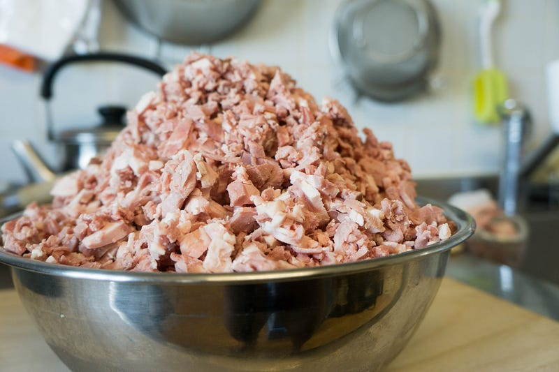
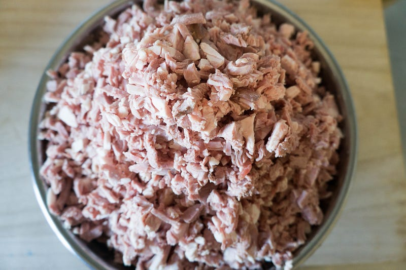
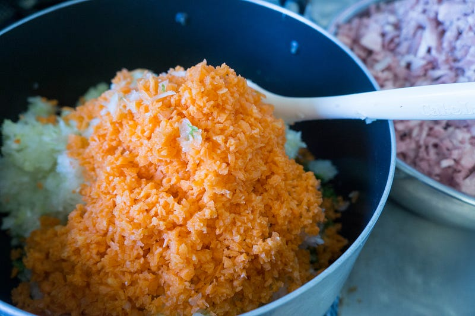
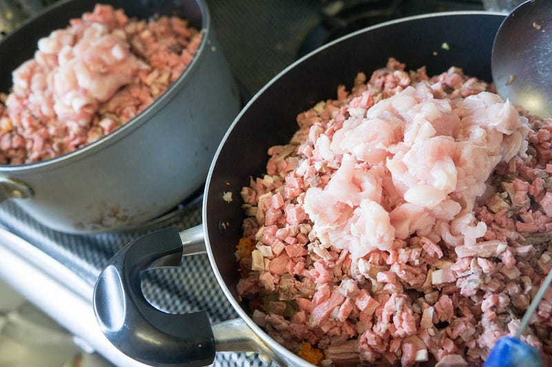
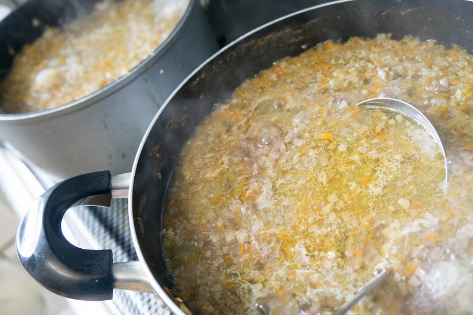
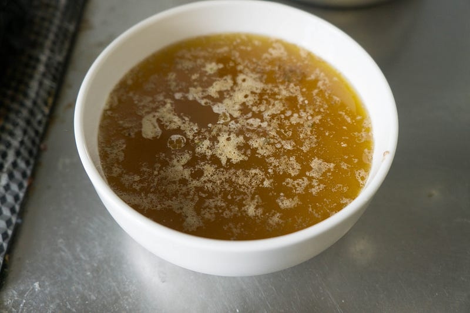
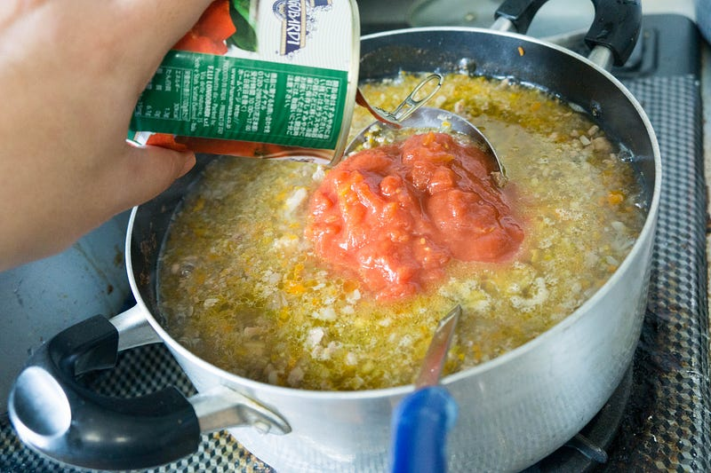
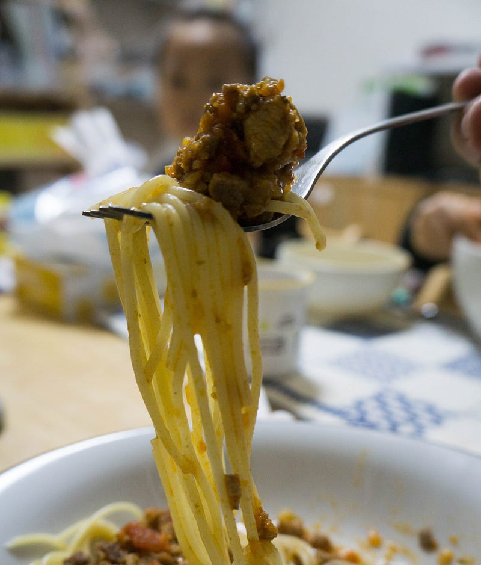
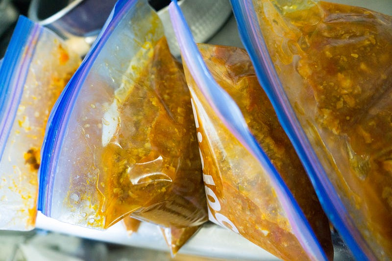

3kgの肉が余ったら作るミートソース
3kgの肉が余ったら作るミートソース
この間低温調理肉会というのをやったのだが、その際肉が余った。目算で合計約3kgの牛ロースと、ラムショルダーだ。肉があまってしまったら煮込む、というのはセオリーが決まっている。うちの場合はミートソースにして冷凍してしまう。
なお、以前似たような事をラムと鴨でやっているのですが、どうやら記録を残していなかった模様。無念。
肉は全て塊肉なので、まずよく切れる包丁を用意して、雑念を全て捨て去り、無心になって全ての肉を細切れにします。あまり細かいミンチにすると食べた時の歯ごたえがつまらないので、カルボナーラに入ってるベーコンくらいを目指します。
好みの問題かもしれませんが、熱湯を用意しておくのをお勧めします。肉の脂が包丁について切れなくなるのでこまめに拭く必要があるのですが、そのうち布巾が脂まみれになって使い物にならなくなります。正直包丁にお湯をかけてもらった方が早いです。
3kg前後の肉を切るとこうなります。脂肪の塊とかは除去してるので、都合2.6~2.8kgとかな気はしますが、この話の中では3kgでいきます。なおこのボウルの直径はちょっと忘れましたが、26cmか28cmくらいだと思います。

上から見てもなにがなにやら。

これだけの肉があると、しょぼい量の野菜を入れてもただの肉スープになってしまいます。なので大量のみじん切りを用意します。フープロ最高です。

ニンジン（大）2本、タマネギ（大）3個、セロリ3本、冷蔵庫にあまってた青ネギ2本。肉の量的にはもっと入れたかったけど、うちの鍋ではこれが限界。ちなみに鍋は二つつかってます。

肉と野菜を二つの鍋に入れ始めたところで気がつきました。前述の低温調理肉会のブログエントリでもちらっと触れているのですが、肉の質が気に入らなくて入れ替えた豚肉が残っていました。
9割方すでに火を通して真空パック保存しておいたのですが、あと数個生の豚ロースが残っていたので追い豚しました。上の写真でちょこんと乗ってる肉がそれです。
あとは煮ます。煮て灰汁と脂を取ります。肉の脂は基本好きなんだけど、こういう煮物では多すぎるとくどくてまずいので、極力取り去って、あとである程度のオリーブオイルで補完します。

いいですか、前述の肉会に参加していた皆さん。あなたたちはこの直径12cm、高さ5cmくらいの皿に入っている脂を食べていたのですよ！（なお、この容器に入れる前にお玉二杯分、うっかりそのまま排水溝に流してしまった）

この脂は後ほど凍らせて、普通ゴミに出しました。
あとはトマトとコンソメを入れて、しばらく煮込みます。

味は塩でおおまかに決めておきますが、この際、薄味にしておきましょう。煮詰まってあとで味が濃くなります。良い感じになったら一旦火を止めて休ませます。
味を決めるのは食べる直前くらいでいいのではないかな。塩味がきまったら、オリーブオイルを一回しいれると、あら不思議、良い感じのコクがでます。あとはパスタにかけて食べましょう。
シェフの腕のほうはともかく、原材料的にはお店で出したらひと皿1500円くらいな感じかなー。うまい。

さて、3kgの肉なので当然一気には食べられません。うちで換算すると8食分くらいはできました。これらはジップロックに入れて、料理するのが億劫な日にささっとパスタを出すのに使います。

今回はちゃんと美味しい肉を使ったけど、ミートソースはほぼどんな肉でもうまくなるので、余り肉でささっとつくっちゃうに限る。